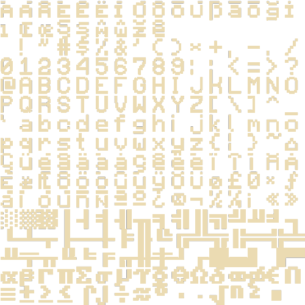

ASCII art. What's that?
_..-:-.._
_..--'' : ``--.._
_..--'' : ``--.._
_..-'' : .'``--.._
_..--'' `. : .' |
| `. _.-''|``-._ .' |
| `. _.-'' | ``-._.' _.-. |
| |`-._ `._.-'' | ;._ | _.-' | |
| | `-._ | _.-| | | `-. | | _.-' | KSR
|_ `-._ | | | | | `-._ | | |_.-' _.-' ..
`-._ `-._| | |. | _.-'-._ `' | _.-' ..::::::..
`-._ | | _|-' * `-._ | _.-' ..::::::::''
`-._ | _|-'.::. \|/ * `-.|.-' ..::::::::''
`-.|.-' *`:::::::.. \|/ * ..::::::::''
\|/ *`:::::::.. \|/ ..::::::::''
\|/ *`:::::::.::::::::''
\|/ *`::::::::''
\|/ `:''
------------------------------------------------
Thank you for visiting https://asciiart.website/
This ASCII pic can be found at
https://asciiart.website/index.php?art=objects/buildings
ASCII art is as much a part of the Internet as emoticons, cats, or lol.
We're talking about pictures made from text: letters, numbers, and special characters like # * and \ .
Sometimes letters are used just to form other, bigger letters.
ASCII art is basically images created only through text characters, specifically the 128 characters specified
in the American Standard Code for Information Interchange, a character encoding standard for
electronic communication.
They look like this:

Brief history of ASCII art.
Though it is still around today, ASCII art reached the zenith of its popularity before the web.
It was the visual language of BBSs, Telnet, and many other pre-WWW networks.
In a wholly text-based world, these works proliferated. For the brief moment that modems were the
preferred mode of access to other computers, they were useful. And their sketchy aesthetic seemed
right for mediums that were provisional and changing rapidly. But people have been playing around with
the spacing of their text since ancient Greece, a phenomenon which is sometimes called “concrete poetry”
(or “shape poetry”).
George Herbert's "Easter Wings" from 1633
We can trace the history of what we refer to
today as text art, and actually dig up this spectacular example from 1898.
This image
— created by Flora F.F. Stacey — was included in the 2014 book “Typewriter Art, A Modern Anthology,”
which notes that the text artists of the 19th century had a different technique available to them:
“feeding the paper into the rollers at numerous times, each at a different angle to allow the overprinting
and fine-tuning of the image.”
“Victorian female stenographers pioneered a unique art form” notes a 2014 essay at BrainPickings.org,
calling the book as “a beautiful allegory for how all technology is eventually co-opted as an
unforeseen canvas for art and political statement.”
"When in the 1880s typewriters became commonplace, this kind of image was done on the typewriter with
letters or blank spaces, was known as typewriter art. In the first generation of computers,
typewriter art was automated, and pictures of Washington, Lincoln, Harry Truman etc.,
were produced in this way.
When computer output moved from the typed page to the television or video screen,
the whole screen was subdivided into a certain large number, say 1,024 x 1,024 = 1,048,576 areas or so-called
'pixels', each of which could be addressed, shaded, coloured or otherwise transformed or manipulated."
In other words, the decomposition of images into lots and lots of little marks was a conceptual step
towards the pixel. In this telling, typewriter art is not merely an ancestor of ASCII art,
but of everything that goes on a screen. The television, the CRT monitor, the iPhone.
You can sense its potential in some of the earliest computer games — for example,
the maps in “Star Trek” (1971), “Rogue” (1980) and “NetHack” (1987).
Gaming in command line.
In 1980, UC Santa Cruz students Glenn Wichman and Michael Toy teamed up to make a game that would randomize
the maze layout and monster/item locations in Colossal Cave Adventure .
They wanted their adventure to also incorporate elements of D&D and the popular 1970s text-based mainframe game
Star Trek
—which tasked players with wiping out all the Klingon warships across the galaxy before time runs out.
With help from a Unix programming library called curses, which was kind of a textmode paint tool,
the pair devised a subterranean adventure through level after level of up to nine rooms each,
connected by corridors, in search of the Amulet of Yendor. Except not really in search of the Amulet,
which was only ever intended to be a call to adventure—a narrative reason for descending into a
dangerous dungeon. Every time you played, the levels, potions, scrolls, weapons,
and object positions would all be randomized—every item unidentifiable
(unless you happened to be carrying a scroll of identification) until
you dared to use it, at the risk of unintended harm.
They distributed executable versions of their game,
Rogue ,
across all the University of California campuses.
It had 26 monster types—one for each letter of the alphabet (capitalized)—and an '@'
to represent the player's character, who could move no faster or slower than the monsters.
And each time you made an action—be it stepping in any direction or reading a scroll or "searching"
for traps or grabbing an item or whatever else—you used up a turn.
Actions, meanwhile, corresponded to various key presses—'w' to wield a weapon, 'W' to wear armor, 't' to throw
a weapon, h, j, k, and l to move, and so on. And death, which came easily even to experienced players,
was permanent—so you had to focus on mastering the mechanics rather than the level design of the game.
(When a group of players began copying their save data so they could circumvent this permadeath,
Toy and Wichman changed the code; saves would thereafter be erased immediately on reload.)
When Toy transferred to UC Berkeley in 1982, he and curses developer Ken Arnold made further refinements,
which made the game even more popular. So much so that Rogue was officially added to BSD Unix version
4.2 in 1984, which—thanks to the ARPANET—put Rogue onto computers at universities and research labs and
commercial companies all around the world.
This move would ensure Rogue survived long-term, but, by some freak, random chance,
it was already on track for much bigger things.
ASCII art and python.
If you are curious to try ASCII art yourself, there is an easy way. A python library called art.
Thats how they describe it on pypi.org :
"ASCII art is also known as "computer text art". It involves the smart placement of typed special characters or
letters to make a visual shape that is spread over multiple lines of text.
ART is a Python lib for text converting to ASCII art fancy. ;-)"
PyPI:
pip install art==5.6 #or
pip3 install art==5.6
Conda:
conda install -c sepandhaghighi art
Example:
>>> from art import *
>>> tprint("test",font="rnd-large")
8888888 8888888888 8 8888888888 d888888o. 8888888 8888888888
8 8888 8 8888 .`8888:' `88. 8 8888
8 8888 8 8888 8.`8888. Y8 8 8888
8 8888 8 8888 `8.`8888. 8 8888
8 8888 8 888888888888 `8.`8888. 8 8888
8 8888 8 8888 `8.`8888. 8 8888
8 8888 8 8888 `8.`8888. 8 8888
8 8888 8 8888 8b `8.`8888. 8 8888
8 8888 8 8888 `8b. ;8.`8888 8 8888
8 8888 8 888888888888 `Y8888P ,88P' 8 8888
Wanna watch Star Wars Episode IV over telnet? Easy!
From 20th Century Text comes…Star Wars in your command line terminal!
Have nothing better to do? Do you enjoy ASCII art?
If you answered “Yes!” (with or without an exclamation mark) to either of those questions,
then you might want to try out this novel ASCII art creation that plays Star Wars Episode IV in a terminal.
Playback is easy, but it does require an Internet connection because you must use telnet in a terminal.
Open a terminal and enter:
telnet towel.blinkenlights.nl
Then, sit back and waste time! Keep in mind that this is not a streaming movie or anything of the sort.
It is a recreation of scenes made in ASCII art. Talk about geeky!
_________________ ____ __________
. . / | / \ . | \
. / ______ _____| . / \ | ___ | . .
\ \ | | / /\ \ | |___> |
. \ \ | | / /__\ \ . | _/ .
. ________> | | | . / \ | |\ \_______ .
| / | | / ______ \ | | \ |
|___________/ |___| /____/ \____\ |___| \__________| .
. ____ __ . _____ ____ . __________ . _________
\ \ / \ / / / \ | \ / | .
\ \/ \/ / / \ | ___ | / ______| .
\ / / /\ \ . | |___> | \ \
. \ / / /__\ \ | _/. \ \
\ /\ / / \ | |\ \______> | .
\ / \ / / ______ \ | | \ / .
. . \/ \/ /____/ \____\ |___| \____________/
.
------------------------------------------------
._,.
"..-..pf.
-L ..#'
.+_L ."]#
,'j' .+.j` -'.__..,.,p.
_~ #..<..0. .J-.``..._f.
.7..#_.. _f. .....-..,`4'
;` ,#j. T' .. ..J....,'.j`
.` .."^.,-0.,,,,yMMMMM,. ,-.J...+`.j@
.'.`...' .yMMMMM0M@^=`""g.. .'..J..".'.jH
j' .'1` q'^)@@#"^".`"='BNg_...,]_)'...0-
.T ...I. j" .'..+,_.'3#MMM0MggCBf....F.
j/.+'.{..+ `^~'-^~~""""'"""?'"``'1`
.... .y.} `.._-:`_...jf
g-. .Lg' ..,..'-....,'.
.'. .Y^ .....',].._f
......-f. .-,,.,.-:--&`
.`...'..`_J`
.~......'#'
Ray Brunner '..,,.,_]` Sienar Fleet Systems' TIE/In
.L..`..``. Space Superiority Starfighter (2)
------------------------------------------------
Thank you for visiting https://asciiart.website/
This ASCII pic can be found at
https://asciiart.website/index.php?art=movies/star%20wars
The authors apparently have a love for the movie considering the time and effort that was taken in recreating the scenes.
This ASCII animation has been around for quite some time. You can even watch it and other projects in a web browser
by visiting the web site.
Is ASCII art dead?
Apparently, Microsoft declared ASCII art ‘dead’ in June 1998 when Internet Explorer’s Tip of the Day pronounced:
CUTE, BUT USELESS
Many people still like to use ASCII characters to draw pictures in their e-mail.
You know, you see those pictures made up of numerous X’s, I’s, etc.
These things were cool in their day. The problem is, their day is over.
ASCII pictures don’t display correctly when the viewer is using proportional
fonts — and a huge number of people (perhaps most) are using proportional fonts.
We suggest that you resist the temptation to send ASCII pictures with your e-mail.
But is it really so?
Actually, no. ASCII art is still alive and there are new interesting projects out there in the web.
I gathered some of them here, so you can judge for yourself:
-Stone story RPG
-Guilded Youth
-ASCIIDENT
-ASCIILL
-Pyramid builder